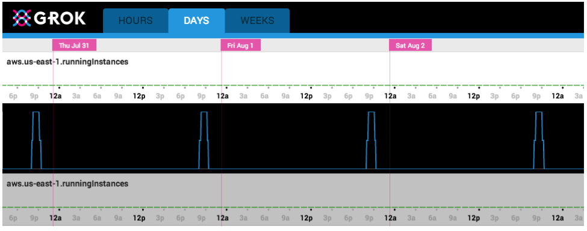
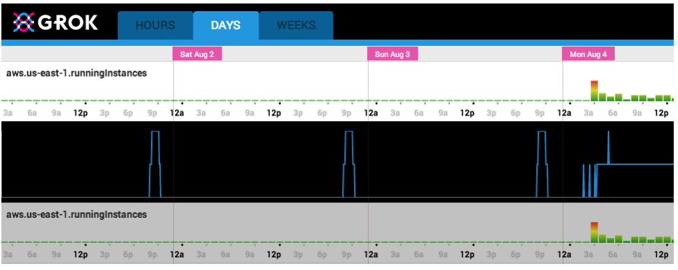
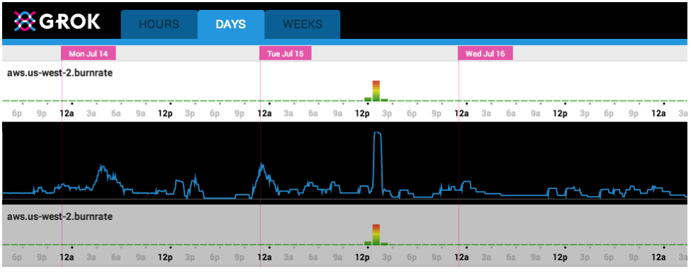
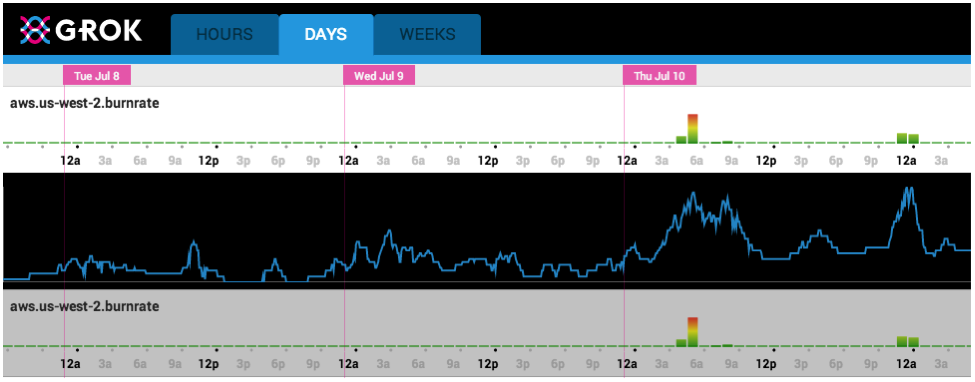

Jared Weiss•Engineering Intern
Jared Weiss•Engineering Intern
NOTE: Numenta has announced a strategic partnership with Avik Partners, please read more about the future of Grok for IT Analytics.
While the forefront issue in an engineer’s mind might be that builds are consistently running and production servers aren’t experiencing unexpected downtime, a business executive might have completely different concerns. As an experiment, I decided to address what I believed might be a primary concern of IT managers: ensuring that AWS costs are managed to budget and costs are minimized. My approach was to feed cost data to Grok to identify any anomalies in spending relative to the normal pattern of spend.
Using Grok’s custom metrics, I sampled and fed AWS burnrate statistics into Grok for regional burnrates as well as instance counts. Since AWS instances vary in pricing, spinning up one EC2 I2-8xlarge instance could be just as much of a problem as spinning up several T2-micro instances. Therefore, even though most anomalies would likely be caught by both metrics, I wanted to be sure that unexpected corner-case anomalies would be caught too.
In fact, at the beginning of my experiment, the burnrate monitor was able to detect an anomaly in AWS’s us-east-1 region. For ease-of-use, most of the servers we use reside in the us-west-2 region, however all of our testing for marketplace AMIs happens on us-east-1 servers. For that reason, early on August 4th, Grok detected an anomaly when our QA team began testing one of our marketplace candidates. Since Grok had learned the regular pattern of nightly AMI tests, when all of a sudden an instance was manually created, Grok quickly notified me.
Grok Web UI showing Normal Pattern

Grok Web UI showing anomaly due to launch of AMI tests

In this case because I knew the QA team was starting a new cycle of testing, I was able to easily identify the cause of the anomaly. Nevertheless, it was useful that Grok identified the increased in instances and impact on costs. Had I not expected the anomaly, I would have been able to quickly find the source of the problem, whether it be a faulty testing script that forgets to delete automatically created instances on failure, or an accidentally changed limit on an auto-scaling group. In today’s dynamic and virtualized IT environments, it’s great to have this peace of mind that jumps in costs outside of normal patterns can be identified quickly. Not only can Grok tell an engineer that a server is operating normally, but it can also report to a senior manager that their company isn’t incurring unexpected costs.
In use cases with noisier data (such as burnrate for our us-west-2 region where most of our instances are located), the burnrate monitor still excels at detecting anomalous spending. Large, anomalous jumps in spending that could be attributed to a larger than usual instance being spun up or accidentally setting the minimum instance count of an auto-scaling group to 500 instead of 50 are quickly recognized, enabling the proper team member to rapidly address the issue. Rather than receiving an enormous (and unexpected) bill at the end of the month, the cost and likelihood of a serious AWS mistake is substantially mitigated. During my experiment Grok was able to identify an anomaly due to an error in the configuration of our auto-scaling group, causing it to grow unnecessarily large. Despite a more noisy usage pattern for this AWS region, Grok was able to identify it.
Grok Web UI showing anomaly due to error in auto-scaling group configuration

Grok can also learn new behaviors. When we began to spin up several more costly instances for testing, Grok first detected this behavior as anomalous, but as we continued testing on the larger instances, Grok taught itself the new pattern and stopped flagging the increased burnrates as anomalous. Especially with Amazon continually announcing new instance sizes and costs, unexpected changes to server burnrate are inevitable, and it’s necessarily important to be able to learn the new burnrate patterns.
Grok Web UI showing learning of new pattern

Jared Weiss•Engineering Intern